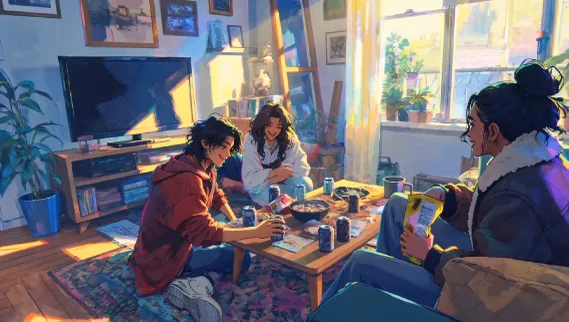
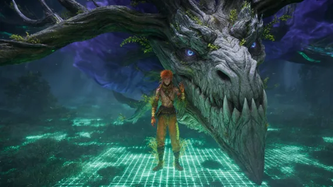
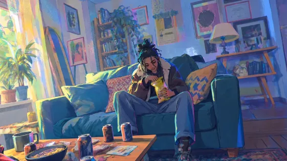
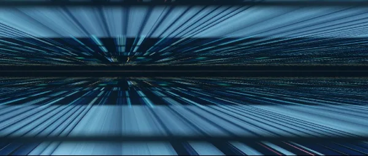
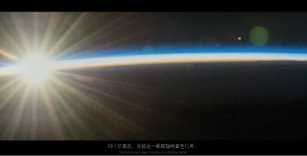
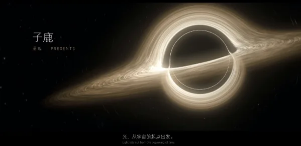
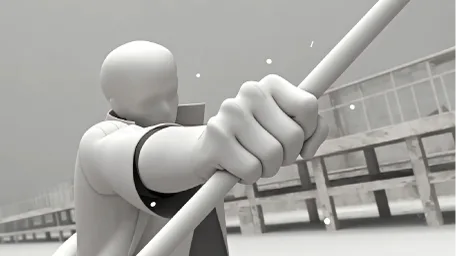
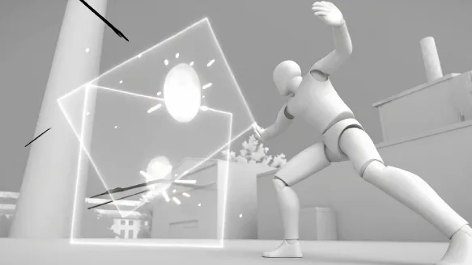
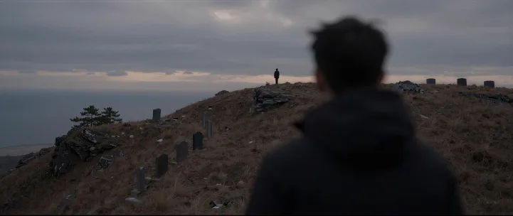

A Trailer in Several Styles
One trailer, several visual languages.
Style Tests
Style studyOriginal production notes · Chinese
多画风片段
Motion Notes · 其他模拟尝试





画面探索 · 01








画面探索 · 02

画面探索 · 03





画面探索 · 04